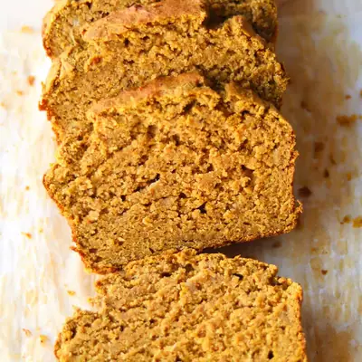

Healthy Pumpkin Banana Bread

Ingredients
- 1 3/4 cups (175g) rolled oats, or flour of choice (see notes section)
- 1 teaspoon baking powder
- 1/2 teaspoon baking soda
- 2 teaspoons pumpkin pie spice
- 1 cup (240g) canned pumpkin puree
- 2 medium over ripe banana (240g weighed without peel)
- 2 eggs, room temperature
- 1/4 cup butter, melted (or olive oil or avocado oil)
- 1 teaspoon apple cider vinegar
- 1 teaspoon vanilla
- 3-5 tablespoons maple syrup, see note
Steps
- Preheat oven to 350°F and prepare a 8x4 loaf pan by greasing it with oil or butter or lining with parchment paper. Set aside.
- Add the oats to a blender and blend until finely ground to resemble flour.
- In a large bowl, mix together all the dry ingredients.
- Add all the wet ingredients into the blender and blend until smooth.
- Pour the wet ingredients into the bowl with the dry ingredients. Be careful not to over mix.
- Bake for for 45-50 minutes, or until the toothpick comes out clean when inserted into the center of the bread. Cool the bread for at least 15 minutes then transfer to a wire rack. This will prevent soggy bottom.
- Allow the bread to cool COMPLETELY! This is super important! The bread will be especially moist straight out of the oven, and if you slice it too soon, the bread will fall apart and be too gummy in texture.
Recipe by Min Kwon · Kidfriendly Meals, from MJ and Hungryman. Saved here for personal use; the original has the full notes, tips and photos. Open original